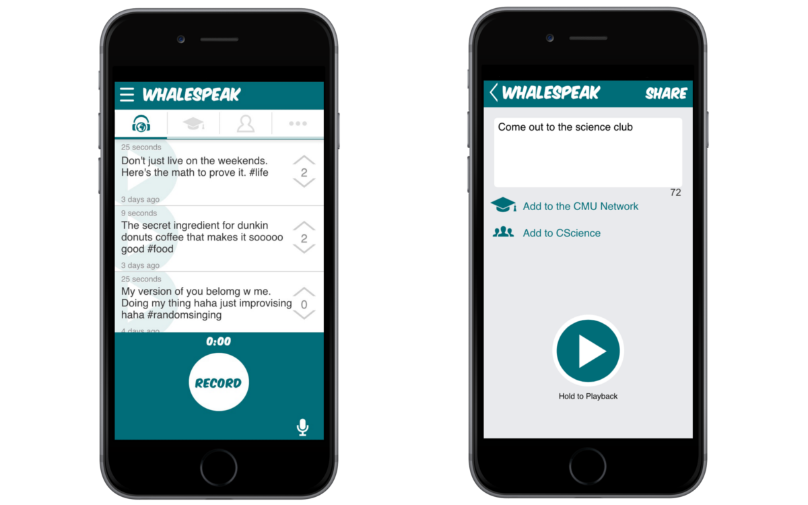
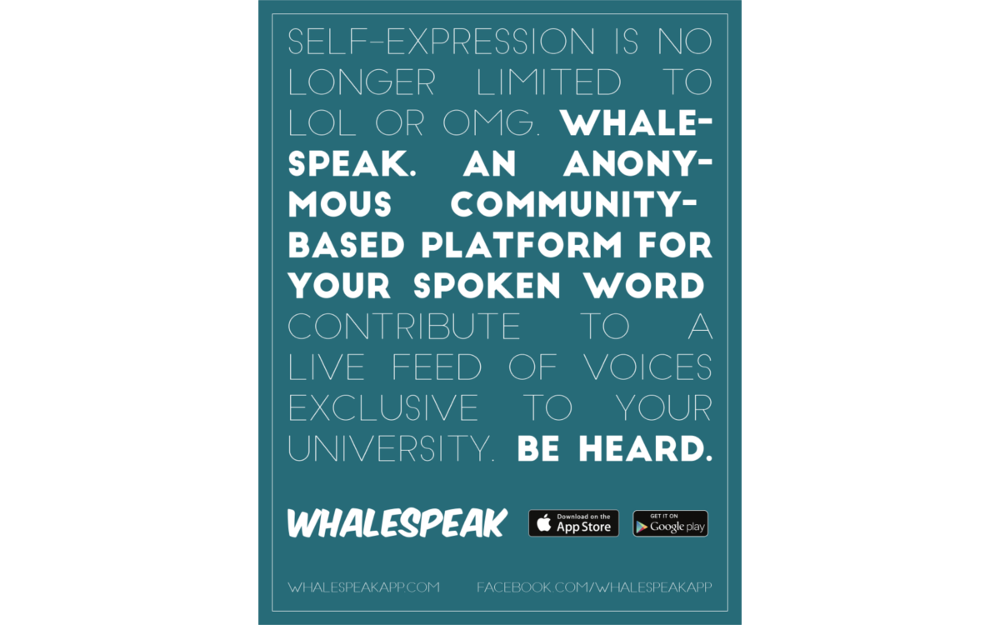

Designed and built Whalespeak, an anonymous mobile app for the spoken word and sounds of life.
Dates: March 2014 - February 2016
Team: Scott Dombkowski, Michael Wang, and Steven Chen
Whalespeak was an anonymous mobile app for the spoken word and sounds of life. In March of 2014, I started working on the app with one of the teammates I started LISTD with and another developer peer.
We strove to provide a platform that allowed users to freely express themselves through audio. Users could listen to a live feed of real voices/sounds and join the conversation by recording their own thoughts and experiences. We attempted to overcome the limits of text in social media by focusing on the human voice and the sounds of life. We hoped that users would be able to more accurately capture their feelings and intentions through audio.
We worked on Whalespeak for two years, continuously making improvements and exploring functionality that would allow users to more openly express themselves through audio. We were never able to overcome the unfamiliarity users had with audio in the space we were trying to operate in. This unfamiliarity led to a number of limitations including users needing to use headphones to comfortably use our app without worrying about bothering the people around them and some users experiencing apprehension when uploading audio that could be heard again and again. Such struggles eventually led us to decide to terminate our work on this project.
Responsibilities
- Led the development of our mobile application. This includes deciding what functionality to develop and determining the priority of that functionality.
- Assisted with the software development.
- Identified new ways to market Whalespeak. This included working with campus reps at George Washington University and the University of Maryland.
Whalespeak Latest and Popular Feeds
Whalespeak Campus Feed and Featured/Trending Hashtags

Whalespeak Record and Share Screens

Whalespeak Campus Marketing Poster